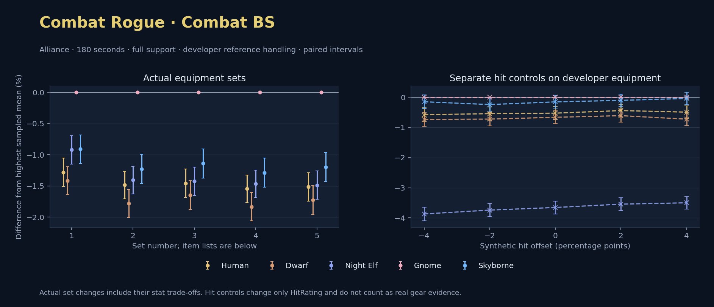

Alliance · Human / Dwarf / Night Elf / Gnome / Skyborne

No pet or guardian appears in the reference combat metrics. Reference: Human, developer equipment, 180 seconds and full support. Pet choices remain those of the developer build.
WoWSims developer · Backstab Combat
Unimplemented enchant or active set effects: [{"id": 1676, "pieces": 3, "effects": ["Restores 15 health per 5 sec."]}, {"id": 1676, "pieces": 5, "effects": ["When struck in combat, has a 5% chance to remove a Snare effect from yourself. Can only occur once every 60 sec."]}]
Unmeasured proc rates: [{"source": "set", "id": 1676, "pieces": 4, "kind": "ppm", "origin": "unknown"}, {"source": "item", "id": 19324, "name": "The Lobotomizer", "kind": "ppm", "origin": "vanilla"}, {"source": "enchant", "id": 1900, "name": "Enchant Weapon - Crusader", "kind": "ppm", "origin": "vanilla"}, {"source": "item", "id": 871, "name": "Flurry Axe", "kind": "ppm", "origin": "vanilla"}]
180 seconds, full support and original developer references. Hit below is generic sheet melee / spell hit; school and talent bonuses can be attached directly to spells.
| Race | DPS | Gap and interval | Generic hit | Replay |
|---|---|---|---|---|
| Gnome | 706.13 | +0.000% ± 0.000 | 13.4% / 13.4% | Native input · Website JSON |
| Skyborne | 699.71 | -0.910% ± 0.225 | 13.4% / 13.4% | Native input · Website JSON |
| Night Elf | 699.63 | -0.921% ± 0.228 | 13.4% / 13.4% | Native input · Website JSON |
| Human | 697.09 | -1.281% ± 0.228 | 13.4% / 13.4% | Native input · Website JSON |
| Dwarf | 696.13 | -1.417% ± 0.225 | 14.4% / 14.4% | Native input · Website JSON |
| Slot | Item | ID | Enchant |
|---|---|---|---|
| Head | Darkmantle Cap | 226829 | Lesser Arcane Amalgamation |
| Neck | Beads of Ogre Might | 22150 | |
| Shoulder | Theramore Pauldrons | 271955 | |
| Back | Earthweave Cloak | 21187 | Enchant Cloak - Agility |
| Chest | Darkmantle Tunic | 226825 | Enchant Chest - Living Stats |
| Wrist | Darkmantle Bracers | 226830 | Enchant Bracer - Agility |
| Hands | Darkmantle Grips | 226828 | Enchant Gloves - Greater Agility |
| Waist | Assassin's Waistguard | 272395 | |
| Legs | Darkmantle Pants | 226827 | Lesser Arcane Amalgamation |
| Feet | Darkmantle Footpads | 226831 | Enchant Boots - Minor Speed |
| Ring 1 | Don Julio's Band | 19325 | |
| Ring 2 | Might of Cenarius | 21189 | |
| Trinket 1 | Adaptive Combat Assistant | 272437 | |
| Trinket 2 | Rune of the Guard Captain | 19120 | |
| Main hand | The Lobotomizer | 19324 | Enchant Weapon - Crusader |
| Off hand | Flurry Axe | 871 | Enchant Weapon - Agility |
| Ranged / relic | Fahrad's Reloading Repeater | 22347 |
Published ranked alternatives · Published pre-raid
Recorded source replacements: [{"slot": "head", "from": 11735, "to": 252482, "publishedAlternativeRank": 1, "publishedEpDelta": -3.8, "reason": "First published alternative compatible with the current WoWSims database, class, faction and occupied slots."}, {"slot": "back", "from": 13340, "to": 272414, "publishedAlternativeRank": 1, "publishedEpDelta": -15.3, "reason": "First published alternative compatible with the current WoWSims database, class, faction and occupied slots."}, {"slot": "finger2", "from": 9533, "to": 285190, "publishedAlternativeRank": 2, "publishedEpDelta": -2.5, "reason": "First published alternative compatible with the current WoWSims database, class, faction and occupied slots."}, {"slot": "trinket2", "from": 13171, "to": 274759, "publishedAlternativeRank": 1, "publishedEpDelta": -1.4, "reason": "First published alternative compatible with the current WoWSims database, class, faction and occupied slots."}, {"slot": "ranged", "from": 2100, "to": 13023, "publishedAlternativeRank": 1, "publishedEpDelta": -3.5, "reason": "First published alternative compatible with the current WoWSims database, class, faction and occupied slots."}]
Unimplemented enchant or active set effects: [{"id": 143, "pieces": 2, "effects": ["Improves your chance to hit by 2.0%."]}]
Unmeasured proc rates: [{"source": "enchant", "id": 1900, "name": "Enchant Weapon - Crusader", "kind": "ppm", "origin": "vanilla"}, {"source": "enchant", "id": 1900, "name": "Enchant Weapon - Crusader", "kind": "ppm", "origin": "vanilla"}]
180 seconds, full support and original developer references. Hit below is generic sheet melee / spell hit; school and talent bonuses can be attached directly to spells.
| Race | DPS | Gap and interval | Generic hit | Replay |
|---|---|---|---|---|
| Gnome | 646.16 | +0.000% ± 0.000 | 8.5% / 8.5% | Native input · Website JSON |
| Skyborne | 638.23 | -1.228% ± 0.233 | 8.5% / 8.5% | Native input · Website JSON |
| Night Elf | 637.08 | -1.405% ± 0.221 | 8.5% / 8.5% | Native input · Website JSON |
| Human | 636.56 | -1.485% ± 0.221 | 8.5% / 8.5% | Native input · Website JSON |
| Dwarf | 634.65 | -1.782% ± 0.226 | 9.5% / 9.5% | Native input · Website JSON |
| Slot | Item | ID | Enchant |
|---|---|---|---|
| Head | Blue Suede Hat | 252482 | Lesser Arcane Amalgamation |
| Neck | Skibi's Pendant | 13089 | Enchant Necklace - Agility |
| Shoulder | Shadowcraft Spaulders | 16708 | |
| Back | Howler's Furs | 272414 | Enchant Cloak - Agility |
| Chest | Dawn Armor | 252483 | Enchant Chest - Greater Stats |
| Wrist | Shadowcraft Bracers | 16710 | Enchant Bracer - Agility |
| Hands | Devilsaur Gauntlets | 15063 | Enchant Gloves - Greater Agility |
| Waist | Assassin's Waistguard | 272395 | |
| Legs | Devilsaur Leggings | 15062 | Lesser Arcane Amalgamation |
| Feet | Shadowcraft Boots | 16711 | Enchant Boots - Greater Agility |
| Ring 1 | Cutthroat's Signet | 272408 | |
| Ring 2 | Wyvern Heart Band | 285190 | |
| Trinket 1 | Adaptive Combat Assistant | 272437 | |
| Trinket 2 | Everlook Pathcarver | 274759 | |
| Main hand | Heartseeker | 12783 | Enchant Weapon - Crusader |
| Off hand | Scarlet Kris | 5267 | Enchant Weapon - Crusader |
| Ranged / relic | Eaglehorn Long Bow | 13023 |
Published one-slot hit alternative · Published pre-raid
One source-listed alternative; at least 80% of the source slot score retained. Reported hit selects the contrast; only native stats determine simulation outcomes. This is an experimental combination, not an endorsed best set.
Recorded source replacements: [{"slot": "head", "from": 11735, "to": 252482, "publishedAlternativeRank": 1, "publishedEpDelta": -3.8, "reason": "First published alternative compatible with the current WoWSims database, class, faction and occupied slots."}, {"slot": "back", "from": 13340, "to": 272414, "publishedAlternativeRank": 1, "publishedEpDelta": -15.3, "reason": "First published alternative compatible with the current WoWSims database, class, faction and occupied slots."}, {"slot": "finger2", "from": 9533, "to": 285190, "publishedAlternativeRank": 2, "publishedEpDelta": -2.5, "reason": "First published alternative compatible with the current WoWSims database, class, faction and occupied slots."}, {"slot": "trinket2", "from": 13171, "to": 274759, "publishedAlternativeRank": 1, "publishedEpDelta": -1.4, "reason": "First published alternative compatible with the current WoWSims database, class, faction and occupied slots."}, {"slot": "ranged", "from": 2100, "to": 13023, "publishedAlternativeRank": 1, "publishedEpDelta": -3.5, "reason": "First published alternative compatible with the current WoWSims database, class, faction and occupied slots."}]
Unimplemented enchant or active set effects: [{"id": 143, "pieces": 2, "effects": ["Improves your chance to hit by 2.0%."]}]
Unmeasured proc rates: [{"source": "enchant", "id": 1900, "name": "Enchant Weapon - Crusader", "kind": "ppm", "origin": "vanilla"}, {"source": "enchant", "id": 1900, "name": "Enchant Weapon - Crusader", "kind": "ppm", "origin": "vanilla"}]
180 seconds, full support and original developer references. Hit below is generic sheet melee / spell hit; school and talent bonuses can be attached directly to spells.
| Race | DPS | Gap and interval | Generic hit | Replay |
|---|---|---|---|---|
| Gnome | 637.41 | +0.000% ± 0.000 | 6.5% / 6.5% | Native input · Website JSON |
| Skyborne | 630.13 | -1.141% ± 0.233 | 6.5% / 6.5% | Native input · Website JSON |
| Night Elf | 628.32 | -1.425% ± 0.228 | 6.5% / 6.5% | Native input · Website JSON |
| Human | 628.12 | -1.457% ± 0.228 | 6.5% / 6.5% | Native input · Website JSON |
| Dwarf | 626.92 | -1.646% ± 0.231 | 7.5% / 7.5% | Native input · Website JSON |
| Slot | Item | ID | Enchant |
|---|---|---|---|
| Head | Blue Suede Hat | 252482 | Lesser Arcane Amalgamation |
| Neck | Skibi's Pendant | 13089 | Enchant Necklace - Agility |
| Shoulder | Shadowcraft Spaulders | 16708 | |
| Back | Howler's Furs | 272414 | Enchant Cloak - Agility |
| Chest | Dawn Armor | 252483 | Enchant Chest - Greater Stats |
| Wrist | Shadowcraft Bracers | 16710 | Enchant Bracer - Agility |
| Hands | Devilsaur Gauntlets | 15063 | Enchant Gloves - Greater Agility |
| Waist | Might of the Timbermaw | 19044 | |
| Legs | Devilsaur Leggings | 15062 | Lesser Arcane Amalgamation |
| Feet | Shadowcraft Boots | 16711 | Enchant Boots - Greater Agility |
| Ring 1 | Cutthroat's Signet | 272408 | |
| Ring 2 | Wyvern Heart Band | 285190 | |
| Trinket 1 | Adaptive Combat Assistant | 272437 | |
| Trinket 2 | Everlook Pathcarver | 274759 | |
| Main hand | Heartseeker | 12783 | Enchant Weapon - Crusader |
| Off hand | Scarlet Kris | 5267 | Enchant Weapon - Crusader |
| Ranged / relic | Eaglehorn Long Bow | 13023 |
Published ranked alternatives · Published pre-raid
Recorded source replacements: [{"slot": "head", "from": 11735, "to": 252482, "publishedAlternativeRank": 1, "publishedEpDelta": -3.8, "reason": "First published alternative compatible with the current WoWSims database, class, faction and occupied slots."}, {"slot": "back", "from": 13340, "to": 272414, "publishedAlternativeRank": 1, "publishedEpDelta": -15.3, "reason": "First published alternative compatible with the current WoWSims database, class, faction and occupied slots."}, {"slot": "waist", "from": 227805, "to": 272395, "publishedAlternativeRank": 1, "publishedEpDelta": -9.1, "reason": "First published alternative compatible with the current WoWSims database, class, faction and occupied slots."}, {"slot": "finger2", "from": 17713, "to": 285190, "publishedAlternativeRank": 2, "publishedEpDelta": -9.9, "reason": "First published alternative compatible with the current WoWSims database, class, faction and occupied slots."}, {"slot": "ranged", "from": 2100, "to": 13023, "publishedAlternativeRank": 1, "publishedEpDelta": -3.5, "reason": "First published alternative compatible with the current WoWSims database, class, faction and occupied slots."}]
Unimplemented enchant or active set effects: [{"id": 143, "pieces": 2, "effects": ["Improves your chance to hit by 2.0%."]}]
Unmeasured proc rates: [{"source": "enchant", "id": 1900, "name": "Enchant Weapon - Crusader", "kind": "ppm", "origin": "vanilla"}, {"source": "enchant", "id": 1900, "name": "Enchant Weapon - Crusader", "kind": "ppm", "origin": "vanilla"}]
180 seconds, full support and original developer references. Hit below is generic sheet melee / spell hit; school and talent bonuses can be attached directly to spells.
| Race | DPS | Gap and interval | Generic hit | Replay |
|---|---|---|---|---|
| Gnome | 649.33 | +0.000% ± 0.000 | 8.5% / 8.5% | Native input · Website JSON |
| Skyborne | 640.97 | -1.287% ± 0.233 | 8.5% / 8.5% | Native input · Website JSON |
| Night Elf | 639.80 | -1.468% ± 0.222 | 8.5% / 8.5% | Native input · Website JSON |
| Human | 639.29 | -1.546% ± 0.222 | 8.5% / 8.5% | Native input · Website JSON |
| Dwarf | 637.43 | -1.833% ± 0.226 | 9.5% / 9.5% | Native input · Website JSON |
| Slot | Item | ID | Enchant |
|---|---|---|---|
| Head | Blue Suede Hat | 252482 | Lesser Arcane Amalgamation |
| Neck | Skibi's Pendant | 13089 | Enchant Necklace - Agility |
| Shoulder | Shadowcraft Spaulders | 16708 | |
| Back | Howler's Furs | 272414 | Enchant Cloak - Agility |
| Chest | Dawn Armor | 252483 | Enchant Chest - Greater Stats |
| Wrist | Shadowcraft Bracers | 16710 | Enchant Bracer - Agility |
| Hands | Devilsaur Gauntlets | 15063 | Enchant Gloves - Greater Agility |
| Waist | Assassin's Waistguard | 272395 | |
| Legs | Devilsaur Leggings | 15062 | Lesser Arcane Amalgamation |
| Feet | Shadowcraft Boots | 16711 | Enchant Boots - Greater Agility |
| Ring 1 | Cutthroat's Signet | 272408 | |
| Ring 2 | Wyvern Heart Band | 285190 | |
| Trinket 1 | Adaptive Combat Assistant | 272437 | |
| Trinket 2 | Molten Heart of the Mountain | 249470 | |
| Main hand | Heartseeker | 12783 | Enchant Weapon - Crusader |
| Off hand | Scarlet Kris | 5267 | Enchant Weapon - Crusader |
| Ranged / relic | Eaglehorn Long Bow | 13023 |
Published one-slot hit alternative · Published pre-raid
One source-listed alternative; at least 80% of the source slot score retained. Reported hit selects the contrast; only native stats determine simulation outcomes. This is an experimental combination, not an endorsed best set.
Recorded source replacements: [{"slot": "head", "from": 11735, "to": 252482, "publishedAlternativeRank": 1, "publishedEpDelta": -3.8, "reason": "First published alternative compatible with the current WoWSims database, class, faction and occupied slots."}, {"slot": "back", "from": 13340, "to": 272414, "publishedAlternativeRank": 1, "publishedEpDelta": -15.3, "reason": "First published alternative compatible with the current WoWSims database, class, faction and occupied slots."}, {"slot": "waist", "from": 227805, "to": 272395, "publishedAlternativeRank": 1, "publishedEpDelta": -9.1, "reason": "First published alternative compatible with the current WoWSims database, class, faction and occupied slots."}, {"slot": "finger2", "from": 17713, "to": 285190, "publishedAlternativeRank": 2, "publishedEpDelta": -9.9, "reason": "First published alternative compatible with the current WoWSims database, class, faction and occupied slots."}, {"slot": "ranged", "from": 2100, "to": 13023, "publishedAlternativeRank": 1, "publishedEpDelta": -3.5, "reason": "First published alternative compatible with the current WoWSims database, class, faction and occupied slots."}]
Unimplemented enchant or active set effects: [{"id": 143, "pieces": 2, "effects": ["Improves your chance to hit by 2.0%."]}]
Unmeasured proc rates: [{"source": "enchant", "id": 1900, "name": "Enchant Weapon - Crusader", "kind": "ppm", "origin": "vanilla"}, {"source": "enchant", "id": 1900, "name": "Enchant Weapon - Crusader", "kind": "ppm", "origin": "vanilla"}]
180 seconds, full support and original developer references. Hit below is generic sheet melee / spell hit; school and talent bonuses can be attached directly to spells.
| Race | DPS | Gap and interval | Generic hit | Replay |
|---|---|---|---|---|
| Gnome | 640.61 | +0.000% ± 0.000 | 6.5% / 6.5% | Native input · Website JSON |
| Skyborne | 632.94 | -1.197% ± 0.232 | 6.5% / 6.5% | Native input · Website JSON |
| Night Elf | 631.09 | -1.487% ± 0.227 | 6.5% / 6.5% | Native input · Website JSON |
| Human | 630.90 | -1.516% ± 0.227 | 6.5% / 6.5% | Native input · Website JSON |
| Dwarf | 629.57 | -1.724% ± 0.231 | 7.5% / 7.5% | Native input · Website JSON |
| Slot | Item | ID | Enchant |
|---|---|---|---|
| Head | Blue Suede Hat | 252482 | Lesser Arcane Amalgamation |
| Neck | Skibi's Pendant | 13089 | Enchant Necklace - Agility |
| Shoulder | Shadowcraft Spaulders | 16708 | |
| Back | Howler's Furs | 272414 | Enchant Cloak - Agility |
| Chest | Dawn Armor | 252483 | Enchant Chest - Greater Stats |
| Wrist | Shadowcraft Bracers | 16710 | Enchant Bracer - Agility |
| Hands | Devilsaur Gauntlets | 15063 | Enchant Gloves - Greater Agility |
| Waist | Might of the Timbermaw | 19044 | |
| Legs | Devilsaur Leggings | 15062 | Lesser Arcane Amalgamation |
| Feet | Shadowcraft Boots | 16711 | Enchant Boots - Greater Agility |
| Ring 1 | Cutthroat's Signet | 272408 | |
| Ring 2 | Wyvern Heart Band | 285190 | |
| Trinket 1 | Adaptive Combat Assistant | 272437 | |
| Trinket 2 | Molten Heart of the Mountain | 249470 | |
| Main hand | Heartseeker | 12783 | Enchant Weapon - Crusader |
| Off hand | Scarlet Kris | 5267 | Enchant Weapon - Crusader |
| Ranged / relic | Eaglehorn Long Bow | 13023 |
The same declared pool is available to every race. Each race keeps its best validation-sample set with its screening-selected racial policy. Separate samples confirm that choice, with fresh precision samples near the practical-loss boundary. Gaps use the highest sampled mean under that same duration, support and reference treatment as their reference. A zero reference gap does not certify a race; the main matrix also allows uncertainty in the leader.
| Pool | Seconds | Support | References | Race | DPS | Gap and interval | Racial policies / mana | Selected set | Generic hit: melee / spell | Replay |
|---|---|---|---|---|---|---|---|---|---|---|
| published-pre-raid | 60 | full | developer | Gnome | 773.18 | +0.000% ± 0.0005,000 iterations | developer / developer / developerMana waits 0.0s | published-rogue-combat-daggers-alliance-c0c5671a1d0606e2 | 8.5% / 8.5% | Input · Result · Stats |
| published-pre-raid | 60 | full | developer | Night Elf | 756.79 | -2.120% ± 0.1845,000 iterations | developer / developer / developerMana waits 0.0s | published-rogue-combat-daggers-alliance-c0c5671a1d0606e2 | 8.5% / 8.5% | Input · Result · Stats |
| published-pre-raid | 60 | full | developer | Skyborne | 750.69 | -2.908% ± 0.1815,000 iterations | developer / developer / developerMana waits 0.0s | published-rogue-combat-daggers-alliance-c0c5671a1d0606e2 | 8.5% / 8.5% | Input · Result · Stats |
| published-pre-raid | 60 | full | developer | Human | 748.57 | -3.183% ± 0.1815,000 iterations | developer / developer / developerMana waits 0.0s | published-rogue-combat-daggers-alliance-c0c5671a1d0606e2 | 8.5% / 8.5% | Input · Result · Stats |
| published-pre-raid | 60 | full | developer | Dwarf | 745.89 | -3.529% ± 0.1825,000 iterations | developer / developer / developerMana waits 0.0s | published-rogue-combat-daggers-alliance-c0c5671a1d0606e2 | 9.5% / 9.5% | Input · Result · Stats |
| published-pre-raid | 60 | full | explicit | Gnome | 745.27 | +0.000% ± 0.0005,000 iterations | developer / developer / developerMana waits 0.0s | published-rogue-combat-daggers-alliance-c0c5671a1d0606e2 | 8.5% / 8.5% | Input · Result · Stats |
| published-pre-raid | 60 | full | explicit | Night Elf | 734.52 | -1.443% ± 0.1975,000 iterations | developer / developer / developerMana waits 0.0s | published-rogue-combat-daggers-alliance-c0c5671a1d0606e2 | 8.5% / 8.5% | Input · Result · Stats |
| published-pre-raid | 60 | full | explicit | Skyborne | 727.94 | -2.325% ± 0.1935,000 iterations | developer / developer / developerMana waits 0.0s | published-rogue-combat-daggers-alliance-c0c5671a1d0606e2 | 8.5% / 8.5% | Input · Result · Stats |
| published-pre-raid | 60 | full | explicit | Human | 726.22 | -2.556% ± 0.1935,000 iterations | developer / developer / developerMana waits 0.0s | published-rogue-combat-daggers-alliance-c0c5671a1d0606e2 | 8.5% / 8.5% | Input · Result · Stats |
| published-pre-raid | 60 | full | explicit | Dwarf | 723.17 | -2.966% ± 0.1935,000 iterations | developer / developer / developerMana waits 0.0s | published-rogue-combat-daggers-alliance-c0c5671a1d0606e2 | 9.5% / 9.5% | Input · Result · Stats |
| published-pre-raid | 60 | self | developer | Gnome | 402.49 | +0.000% ± 0.0005,000 iterations | developer / developer / developerMana waits 0.0s | published-rogue-combat-daggers-alliance-c0c5671a1d0606e2 | 8.5% / 8.5% | Input · Result · Stats |
| published-pre-raid | 60 | self | developer | Night Elf | 395.96 | -1.623% ± 0.1965,000 iterations | developer / developer / developerMana waits 0.0s | published-rogue-combat-daggers-alliance-4414a1a6e05d4589 | 8.5% / 8.5% | Input · Result · Stats |
| published-pre-raid | 60 | self | developer | Skyborne | 388.86 | -3.385% ± 0.1865,000 iterations | developer / developer / developerMana waits 0.0s | published-rogue-combat-daggers-alliance-4414a1a6e05d4589 | 8.5% / 8.5% | Input · Result · Stats |
| published-pre-raid | 60 | self | developer | Human | 388.39 | -3.504% ± 0.1865,000 iterations | developer / developer / developerMana waits 0.0s | published-rogue-combat-daggers-alliance-4414a1a6e05d4589 | 8.5% / 8.5% | Input · Result · Stats |
| published-pre-raid | 60 | self | developer | Dwarf | 386.98 | -3.852% ± 0.1875,000 iterations | developer / developer / developerMana waits 0.0s | published-rogue-combat-daggers-alliance-4414a1a6e05d4589 | 9.5% / 9.5% | Input · Result · Stats |
| published-pre-raid | 60 | self | explicit | Gnome | 383.88 | +0.000% ± 0.0005,000 iterations | developer / developer / developerMana waits 0.0s | published-rogue-combat-daggers-alliance-c0c5671a1d0606e2 | 8.5% / 8.5% | Input · Result · Stats |
| published-pre-raid | 60 | self | explicit | Night Elf | 380.98 | -0.754% ± 0.2085,000 iterations | developer / developer / developerMana waits 0.0s | published-rogue-combat-daggers-alliance-4414a1a6e05d4589 | 8.5% / 8.5% | Input · Result · Stats |
| published-pre-raid | 60 | self | explicit | Skyborne | 373.67 | -2.658% ± 0.1985,000 iterations | developer / developer / developerMana waits 0.0s | published-rogue-combat-daggers-alliance-4414a1a6e05d4589 | 8.5% / 8.5% | Input · Result · Stats |
| published-pre-raid | 60 | self | explicit | Human | 373.43 | -2.722% ± 0.1995,000 iterations | developer / developer / developerMana waits 0.0s | published-rogue-combat-daggers-alliance-4414a1a6e05d4589 | 8.5% / 8.5% | Input · Result · Stats |
| published-pre-raid | 60 | self | explicit | Dwarf | 371.95 | -3.108% ± 0.1995,000 iterations | developer / developer / developerMana waits 0.0s | published-rogue-combat-daggers-alliance-4414a1a6e05d4589 | 9.5% / 9.5% | Input · Result · Stats |
| published-pre-raid | 180 | full | developer | Gnome | 648.50 | +0.000% ± 0.0005,000 iterations | developer / developer / developerMana waits 0.0s | published-rogue-combat-daggers-alliance-c0c5671a1d0606e2 | 8.5% / 8.5% | Input · Result · Stats · Website JSON |
| published-pre-raid | 180 | full | developer | Skyborne | 641.27 | -1.115% ± 0.1055,000 iterations | developer / developer / developerMana waits 0.0s | published-rogue-combat-daggers-alliance-c0c5671a1d0606e2 | 8.5% / 8.5% | Input · Result · Stats · Website JSON |
| published-pre-raid | 180 | full | developer | Night Elf | 639.78 | -1.345% ± 0.1055,000 iterations | developer / developer / developerMana waits 0.0s | published-rogue-combat-daggers-alliance-c0c5671a1d0606e2 | 8.5% / 8.5% | Input · Result · Stats · Website JSON |
| published-pre-raid | 180 | full | developer | Human | 639.26 | -1.425% ± 0.1055,000 iterations | developer / developer / developerMana waits 0.0s | published-rogue-combat-daggers-alliance-c0c5671a1d0606e2 | 8.5% / 8.5% | Input · Result · Stats · Website JSON |
| published-pre-raid | 180 | full | developer | Dwarf | 637.37 | -1.716% ± 0.1055,000 iterations | developer / developer / developerMana waits 0.0s | published-rogue-combat-daggers-alliance-c0c5671a1d0606e2 | 9.5% / 9.5% | Input · Result · Stats · Website JSON |
| published-pre-raid | 180 | full | explicit | Gnome | 636.16 | +0.000% ± 0.0005,000 iterations | developer / developer / developerMana waits 0.0s | published-rogue-combat-daggers-alliance-c0c5671a1d0606e2 | 8.5% / 8.5% | Input · Result · Stats |
| published-pre-raid | 180 | full | explicit | Skyborne | 630.66 | -0.865% ± 0.1085,000 iterations | developer / developer / developerMana waits 0.0s | published-rogue-combat-daggers-alliance-c0c5671a1d0606e2 | 8.5% / 8.5% | Input · Result · Stats |
| published-pre-raid | 180 | full | explicit | Night Elf | 628.95 | -1.133% ± 0.1095,000 iterations | developer / developer / developerMana waits 0.0s | published-rogue-combat-daggers-alliance-c0c5671a1d0606e2 | 8.5% / 8.5% | Input · Result · Stats |
| published-pre-raid | 180 | full | explicit | Human | 628.66 | -1.178% ± 0.1085,000 iterations | developer / developer / developerMana waits 0.0s | published-rogue-combat-daggers-alliance-c0c5671a1d0606e2 | 8.5% / 8.5% | Input · Result · Stats |
| published-pre-raid | 180 | full | explicit | Dwarf | 626.68 | -1.491% ± 0.1085,000 iterations | developer / developer / developerMana waits 0.0s | published-rogue-combat-daggers-alliance-c0c5671a1d0606e2 | 9.5% / 9.5% | Input · Result · Stats |
| published-pre-raid | 180 | self | developer | Gnome | 326.93 | +0.000% ± 0.0005,000 iterations | developer / developer / developerMana waits 0.0s | published-rogue-combat-daggers-alliance-c0c5671a1d0606e2 | 8.5% / 8.5% | Input · Result · Stats |
| published-pre-raid | 180 | self | developer | Night Elf | 322.62 | -1.320% ± 0.1095,000 iterations | developer / developer / developerMana waits 0.0s | published-rogue-combat-daggers-alliance-c0c5671a1d0606e2 | 8.5% / 8.5% | Input · Result · Stats |
| published-pre-raid | 180 | self | developer | Skyborne | 321.85 | -1.555% ± 0.1075,000 iterations | developer / developer / developerMana waits 0.0s | published-rogue-combat-daggers-alliance-c0c5671a1d0606e2 | 8.5% / 8.5% | Input · Result · Stats |
| published-pre-raid | 180 | self | developer | Human | 321.13 | -1.774% ± 0.1085,000 iterations | developer / developer / developerMana waits 0.0s | published-rogue-combat-daggers-alliance-c0c5671a1d0606e2 | 8.5% / 8.5% | Input · Result · Stats |
| published-pre-raid | 180 | self | developer | Dwarf | 320.16 | -2.072% ± 0.1085,000 iterations | developer / developer / developerMana waits 0.0s | published-rogue-combat-daggers-alliance-c0c5671a1d0606e2 | 9.5% / 9.5% | Input · Result · Stats |
| published-pre-raid | 180 | self | explicit | Gnome | 318.93 | +0.000% ± 0.0005,000 iterations | developer / developer / developerMana waits 0.0s | published-rogue-combat-daggers-alliance-c0c5671a1d0606e2 | 8.5% / 8.5% | Input · Result · Stats |
| published-pre-raid | 180 | self | explicit | Night Elf | 315.55 | -1.062% ± 0.1135,000 iterations | developer / developer / developerMana waits 0.0s | published-rogue-combat-daggers-alliance-c0c5671a1d0606e2 | 8.5% / 8.5% | Input · Result · Stats |
| published-pre-raid | 180 | self | explicit | Skyborne | 314.90 | -1.265% ± 0.1105,000 iterations | developer / developer / developerMana waits 0.0s | published-rogue-combat-daggers-alliance-c0c5671a1d0606e2 | 8.5% / 8.5% | Input · Result · Stats |
| published-pre-raid | 180 | self | explicit | Human | 314.32 | -1.447% ± 0.1125,000 iterations | developer / developer / developerMana waits 0.0s | published-rogue-combat-daggers-alliance-c0c5671a1d0606e2 | 8.5% / 8.5% | Input · Result · Stats |
| published-pre-raid | 180 | self | explicit | Dwarf | 313.31 | -1.763% ± 0.1125,000 iterations | developer / developer / developerMana waits 0.0s | published-rogue-combat-daggers-alliance-c0c5671a1d0606e2 | 9.5% / 9.5% | Input · Result · Stats |
| published-pre-raid | 300 | full | developer | Gnome | 625.91 | +0.000% ± 0.0005,000 iterations | developer / developer / developerMana waits 0.0s | published-rogue-combat-daggers-alliance-c0c5671a1d0606e2 | 8.5% / 8.5% | Input · Result · Stats |
| published-pre-raid | 300 | full | developer | Skyborne | 622.30 | -0.577% ± 0.0815,000 iterations | developer / developer / developerMana waits 0.0s | published-rogue-combat-daggers-alliance-c0c5671a1d0606e2 | 8.5% / 8.5% | Input · Result · Stats |
| published-pre-raid | 300 | full | developer | Night Elf | 620.39 | -0.883% ± 0.0815,000 iterations | developer / developer / developerMana waits 0.0s | published-rogue-combat-daggers-alliance-c0c5671a1d0606e2 | 8.5% / 8.5% | Input · Result · Stats |
| published-pre-raid | 300 | full | developer | Human | 620.18 | -0.916% ± 0.0815,000 iterations | developer / developer / developerMana waits 0.0s | published-rogue-combat-daggers-alliance-c0c5671a1d0606e2 | 8.5% / 8.5% | Input · Result · Stats |
| published-pre-raid | 300 | full | developer | Dwarf | 618.40 | -1.201% ± 0.0825,000 iterations | developer / developer / developerMana waits 0.0s | published-rogue-combat-daggers-alliance-c0c5671a1d0606e2 | 9.5% / 9.5% | Input · Result · Stats |
| published-pre-raid | 300 | full | explicit | Gnome | 614.61 | +0.000% ± 0.0005,000 iterations | developer / developer / developerMana waits 0.0s | published-rogue-combat-daggers-alliance-c0c5671a1d0606e2 | 8.5% / 8.5% | Input · Result · Stats |
| published-pre-raid | 300 | full | explicit | Skyborne | 611.89 | -0.442% ± 0.0835,000 iterations | developer / developer / developerMana waits 0.0s | published-rogue-combat-daggers-alliance-c0c5671a1d0606e2 | 8.5% / 8.5% | Input · Result · Stats |
| published-pre-raid | 300 | full | explicit | Night Elf | 610.02 | -0.746% ± 0.0835,000 iterations | developer / developer / developerMana waits 0.0s | published-rogue-combat-daggers-alliance-c0c5671a1d0606e2 | 8.5% / 8.5% | Input · Result · Stats |
| published-pre-raid | 300 | full | explicit | Human | 609.85 | -0.773% ± 0.0835,000 iterations | developer / developer / developerMana waits 0.0s | published-rogue-combat-daggers-alliance-c0c5671a1d0606e2 | 8.5% / 8.5% | Input · Result · Stats |
| published-pre-raid | 300 | full | explicit | Dwarf | 608.00 | -1.075% ± 0.0835,000 iterations | developer / developer / developerMana waits 0.0s | published-rogue-combat-daggers-alliance-c0c5671a1d0606e2 | 9.5% / 9.5% | Input · Result · Stats |
| published-pre-raid | 300 | self | developer | Gnome | 313.45 | +0.000% ± 0.0005,000 iterations | developer / developer / developerMana waits 0.0s | published-rogue-combat-daggers-alliance-c0c5671a1d0606e2 | 8.5% / 8.5% | Input · Result · Stats |
| published-pre-raid | 300 | self | developer | Night Elf | 311.08 | -0.754% ± 0.0845,000 iterations | developer / developer / developerMana waits 0.0s | published-rogue-combat-daggers-alliance-c0c5671a1d0606e2 | 8.5% / 8.5% | Input · Result · Stats |
| published-pre-raid | 300 | self | developer | Skyborne | 310.56 | -0.922% ± 0.0825,000 iterations | developer / developer / developerMana waits 0.0s | published-rogue-combat-daggers-alliance-c0c5671a1d0606e2 | 8.5% / 8.5% | Input · Result · Stats |
| published-pre-raid | 300 | self | developer | Human | 309.78 | -1.169% ± 0.0835,000 iterations | developer / developer / developerMana waits 0.0s | published-rogue-combat-daggers-alliance-c0c5671a1d0606e2 | 8.5% / 8.5% | Input · Result · Stats |
| published-pre-raid | 300 | self | developer | Dwarf | 308.89 | -1.452% ± 0.0845,000 iterations | developer / developer / developerMana waits 0.0s | published-rogue-combat-daggers-alliance-c0c5671a1d0606e2 | 9.5% / 9.5% | Input · Result · Stats |
| published-pre-raid | 300 | self | explicit | Gnome | 306.05 | +0.000% ± 0.0005,000 iterations | developer / developer / developerMana waits 0.0s | published-rogue-combat-daggers-alliance-c0c5671a1d0606e2 | 8.5% / 8.5% | Input · Result · Stats |
| published-pre-raid | 300 | self | explicit | Night Elf | 304.26 | -0.586% ± 0.0885,000 iterations | developer / developer / developerMana waits 0.0s | published-rogue-combat-daggers-alliance-c0c5671a1d0606e2 | 8.5% / 8.5% | Input · Result · Stats |
| published-pre-raid | 300 | self | explicit | Skyborne | 303.68 | -0.777% ± 0.0845,000 iterations | developer / developer / developerMana waits 0.0s | published-rogue-combat-daggers-alliance-c0c5671a1d0606e2 | 8.5% / 8.5% | Input · Result · Stats |
| published-pre-raid | 300 | self | explicit | Human | 303.03 | -0.989% ± 0.0865,000 iterations | developer / developer / developerMana waits 0.0s | published-rogue-combat-daggers-alliance-c0c5671a1d0606e2 | 8.5% / 8.5% | Input · Result · Stats |
| published-pre-raid | 300 | self | explicit | Dwarf | 302.09 | -1.294% ± 0.0875,000 iterations | developer / developer / developerMana waits 0.0s | published-rogue-combat-daggers-alliance-c0c5671a1d0606e2 | 9.5% / 9.5% | Input · Result · Stats |
| developer-reference | 60 | full | developer | Gnome | 824.89 | +0.000% ± 0.0005,000 iterations | developer / developer / developerMana waits 0.0s | developer | 13.4% / 13.4% | Input · Result · Stats |
| developer-reference | 60 | full | developer | Night Elf | 813.27 | -1.409% ± 0.1795,000 iterations | developer / developer / developerMana waits 0.0s | developer | 13.4% / 13.4% | Input · Result · Stats |
| developer-reference | 60 | full | developer | Skyborne | 801.74 | -2.807% ± 0.1735,000 iterations | developer / developer / developerMana waits 0.0s | developer | 13.4% / 13.4% | Input · Result · Stats |
| developer-reference | 60 | full | developer | Human | 799.74 | -3.050% ± 0.1735,000 iterations | developer / developer / developerMana waits 0.0s | developer | 13.4% / 13.4% | Input · Result · Stats |
| developer-reference | 60 | full | developer | Dwarf | 798.35 | -3.218% ± 0.1755,000 iterations | developer / developer / developerMana waits 0.0s | developer | 14.4% / 14.4% | Input · Result · Stats |
| developer-reference | 60 | full | explicit | Gnome | 796.65 | +0.000% ± 0.0005,000 iterations | developer / developer / developerMana waits 0.0s | developer | 13.4% / 13.4% | Input · Result · Stats |
| developer-reference | 60 | full | explicit | Night Elf | 789.50 | -0.898% ± 0.1865,000 iterations | developer / developer / developerMana waits 0.0s | developer | 13.4% / 13.4% | Input · Result · Stats |
| developer-reference | 60 | full | explicit | Skyborne | 778.13 | -2.325% ± 0.1825,000 iterations | developer / developer / developerMana waits 0.0s | developer | 13.4% / 13.4% | Input · Result · Stats |
| developer-reference | 60 | full | explicit | Human | 776.13 | -2.577% ± 0.1815,000 iterations | developer / developer / developerMana waits 0.0s | developer | 13.4% / 13.4% | Input · Result · Stats |
| developer-reference | 60 | full | explicit | Dwarf | 774.52 | -2.778% ± 0.1835,000 iterations | developer / developer / developerMana waits 0.0s | developer | 14.4% / 14.4% | Input · Result · Stats |
| developer-reference | 60 | self | developer | Gnome | 424.40 | +0.000% ± 0.0005,000 iterations | developer / developer / developerMana waits 0.0s | developer | 13.4% / 13.4% | Input · Result · Stats |
| developer-reference | 60 | self | developer | Night Elf | 417.46 | -1.636% ± 0.1895,000 iterations | developer / developer / developerMana waits 0.0s | developer | 13.4% / 13.4% | Input · Result · Stats |
| developer-reference | 60 | self | developer | Skyborne | 410.73 | -3.221% ± 0.1805,000 iterations | developer / developer / developerMana waits 0.0s | developer | 13.4% / 13.4% | Input · Result · Stats |
| developer-reference | 60 | self | developer | Human | 410.13 | -3.364% ± 0.1815,000 iterations | developer / developer / developerMana waits 0.0s | developer | 13.4% / 13.4% | Input · Result · Stats |
| developer-reference | 60 | self | developer | Dwarf | 408.93 | -3.647% ± 0.1825,000 iterations | developer / developer / developerMana waits 0.0s | developer | 14.4% / 14.4% | Input · Result · Stats |
| developer-reference | 60 | self | explicit | Gnome | 405.84 | +0.000% ± 0.0005,000 iterations | developer / developer / developerMana waits 0.0s | developer | 13.4% / 13.4% | Input · Result · Stats |
| developer-reference | 60 | self | explicit | Night Elf | 401.69 | -1.024% ± 0.1975,000 iterations | developer / developer / developerMana waits 0.0s | developer | 13.4% / 13.4% | Input · Result · Stats |
| developer-reference | 60 | self | explicit | Skyborne | 394.72 | -2.741% ± 0.1895,000 iterations | developer / developer / developerMana waits 0.0s | developer | 13.4% / 13.4% | Input · Result · Stats |
| developer-reference | 60 | self | explicit | Human | 394.60 | -2.770% ± 0.1905,000 iterations | developer / developer / developerMana waits 0.0s | developer | 13.4% / 13.4% | Input · Result · Stats |
| developer-reference | 60 | self | explicit | Dwarf | 393.19 | -3.118% ± 0.1905,000 iterations | developer / developer / developerMana waits 0.0s | developer | 14.4% / 14.4% | Input · Result · Stats |
| developer-reference | 180 | full | developer | Gnome | 705.89 | +0.000% ± 0.0005,000 iterations | developer / developer / developerMana waits 0.0s | developer | 13.4% / 13.4% | Input · Result · Stats · Website JSON |
| developer-reference | 180 | full | developer | Skyborne | 699.52 | -0.903% ± 0.0975,000 iterations | developer / developer / developerMana waits 0.0s | developer | 13.4% / 13.4% | Input · Result · Stats · Website JSON |
| developer-reference | 180 | full | developer | Night Elf | 698.97 | -0.981% ± 0.0985,000 iterations | developer / developer / developerMana waits 0.0s | developer | 13.4% / 13.4% | Input · Result · Stats · Website JSON |
| developer-reference | 180 | full | developer | Human | 696.76 | -1.294% ± 0.0975,000 iterations | developer / developer / developerMana waits 0.0s | developer | 13.4% / 13.4% | Input · Result · Stats · Website JSON |
| developer-reference | 180 | full | developer | Dwarf | 695.57 | -1.463% ± 0.0985,000 iterations | developer / developer / developerMana waits 0.0s | developer | 14.4% / 14.4% | Input · Result · Stats · Website JSON |
| developer-reference | 180 | full | explicit | Gnome | 693.31 | +0.000% ± 0.0005,000 iterations | developer / developer / developerMana waits 0.0s | developer | 13.4% / 13.4% | Input · Result · Stats |
| developer-reference | 180 | full | explicit | Skyborne | 688.12 | -0.749% ± 0.0995,000 iterations | developer / developer / developerMana waits 0.0s | developer | 13.4% / 13.4% | Input · Result · Stats |
| developer-reference | 180 | full | explicit | Night Elf | 687.46 | -0.843% ± 0.1005,000 iterations | developer / developer / developerMana waits 0.0s | developer | 13.4% / 13.4% | Input · Result · Stats |
| developer-reference | 180 | full | explicit | Human | 685.63 | -1.108% ± 0.0995,000 iterations | developer / developer / developerMana waits 0.0s | developer | 13.4% / 13.4% | Input · Result · Stats |
| developer-reference | 180 | full | explicit | Dwarf | 684.33 | -1.295% ± 0.1005,000 iterations | developer / developer / developerMana waits 0.0s | developer | 14.4% / 14.4% | Input · Result · Stats |
| developer-reference | 180 | self | developer | Gnome | 352.19 | +0.000% ± 0.0005,000 iterations | developer / developer / developerMana waits 0.0s | developer | 13.4% / 13.4% | Input · Result · Stats |
| developer-reference | 180 | self | developer | Night Elf | 348.16 | -1.146% ± 0.1025,000 iterations | developer / developer / developerMana waits 0.0s | developer | 13.4% / 13.4% | Input · Result · Stats |
| developer-reference | 180 | self | developer | Skyborne | 347.86 | -1.230% ± 0.1025,000 iterations | developer / developer / developerMana waits 0.0s | developer | 13.4% / 13.4% | Input · Result · Stats |
| developer-reference | 180 | self | developer | Human | 346.85 | -1.518% ± 0.1015,000 iterations | developer / developer / developerMana waits 0.0s | developer | 13.4% / 13.4% | Input · Result · Stats |
| developer-reference | 180 | self | developer | Dwarf | 346.04 | -1.747% ± 0.1025,000 iterations | developer / developer / developerMana waits 0.0s | developer | 14.4% / 14.4% | Input · Result · Stats |
| developer-reference | 180 | self | explicit | Gnome | 343.90 | +0.000% ± 0.0005,000 iterations | developer / developer / developerMana waits 0.0s | developer | 13.4% / 13.4% | Input · Result · Stats |
| developer-reference | 180 | self | explicit | Night Elf | 340.79 | -0.907% ± 0.1045,000 iterations | developer / developer / developerMana waits 0.0s | developer | 13.4% / 13.4% | Input · Result · Stats |
| developer-reference | 180 | self | explicit | Skyborne | 340.49 | -0.994% ± 0.1045,000 iterations | developer / developer / developerMana waits 0.0s | developer | 13.4% / 13.4% | Input · Result · Stats |
| developer-reference | 180 | self | explicit | Human | 339.67 | -1.232% ± 0.1045,000 iterations | developer / developer / developerMana waits 0.0s | developer | 13.4% / 13.4% | Input · Result · Stats |
| developer-reference | 180 | self | explicit | Dwarf | 338.83 | -1.475% ± 0.1035,000 iterations | developer / developer / developerMana waits 0.0s | developer | 14.4% / 14.4% | Input · Result · Stats |
| developer-reference | 300 | full | developer | Gnome | 683.79 | +0.000% ± 0.0005,000 iterations | developer / developer / developerMana waits 0.0s | developer | 13.4% / 13.4% | Input · Result · Stats |
| developer-reference | 300 | full | developer | Skyborne | 680.90 | -0.424% ± 0.0755,000 iterations | developer / developer / developerMana waits 0.0s | developer | 13.4% / 13.4% | Input · Result · Stats |
| developer-reference | 300 | full | developer | Night Elf | 680.18 | -0.528% ± 0.0755,000 iterations | developer / developer / developerMana waits 0.0s | developer | 13.4% / 13.4% | Input · Result · Stats |
| developer-reference | 300 | full | developer | Human | 677.96 | -0.853% ± 0.0745,000 iterations | developer / developer / developerMana waits 0.0s | developer | 13.4% / 13.4% | Input · Result · Stats |
| developer-reference | 300 | full | developer | Dwarf | 677.14 | -0.972% ± 0.0765,000 iterations | developer / developer / developerMana waits 0.0s | developer | 14.4% / 14.4% | Input · Result · Stats |
| developer-reference | 300 | full | explicit | Gnome | 672.27 | +0.000% ± 0.0005,000 iterations | developer / developer / developerMana waits 0.0s | developer | 13.4% / 13.4% | Input · Result · Stats |
| developer-reference | 300 | full | explicit | Skyborne | 669.79 | -0.369% ± 0.0755,000 iterations | developer / developer / developerMana waits 0.0s | developer | 13.4% / 13.4% | Input · Result · Stats |
| developer-reference | 300 | full | explicit | Night Elf | 669.08 | -0.474% ± 0.0755,000 iterations | developer / developer / developerMana waits 0.0s | developer | 13.4% / 13.4% | Input · Result · Stats |
| developer-reference | 300 | full | explicit | Human | 667.06 | -0.774% ± 0.0755,000 iterations | developer / developer / developerMana waits 0.0s | developer | 13.4% / 13.4% | Input · Result · Stats |
| developer-reference | 300 | full | explicit | Dwarf | 665.97 | -0.936% ± 0.0755,000 iterations | developer / developer / developerMana waits 0.0s | developer | 14.4% / 14.4% | Input · Result · Stats |
| developer-reference | 300 | self | developer | Gnome | 339.16 | +0.000% ± 0.0005,000 iterations | developer / developer / developerMana waits 0.0s | developer | 13.4% / 13.4% | Input · Result · Stats |
| developer-reference | 300 | self | developer | Night Elf | 336.92 | -0.662% ± 0.0795,000 iterations | developer / developer / developerMana waits 0.0s | developer | 13.4% / 13.4% | Input · Result · Stats |
| developer-reference | 300 | self | developer | Skyborne | 336.66 | -0.738% ± 0.0795,000 iterations | developer / developer / developerMana waits 0.0s | developer | 13.4% / 13.4% | Input · Result · Stats |
| developer-reference | 300 | self | developer | Human | 335.65 | -1.036% ± 0.0795,000 iterations | developer / developer / developerMana waits 0.0s | developer | 13.4% / 13.4% | Input · Result · Stats |
| developer-reference | 300 | self | developer | Dwarf | 334.91 | -1.255% ± 0.0795,000 iterations | developer / developer / developerMana waits 0.0s | developer | 14.4% / 14.4% | Input · Result · Stats |
| developer-reference | 300 | self | explicit | Gnome | 331.50 | +0.000% ± 0.0005,000 iterations | developer / developer / developerMana waits 0.0s | developer | 13.4% / 13.4% | Input · Result · Stats |
| developer-reference | 300 | self | explicit | Night Elf | 329.73 | -0.534% ± 0.0815,000 iterations | developer / developer / developerMana waits 0.0s | developer | 13.4% / 13.4% | Input · Result · Stats |
| developer-reference | 300 | self | explicit | Skyborne | 329.42 | -0.629% ± 0.0805,000 iterations | developer / developer / developerMana waits 0.0s | developer | 13.4% / 13.4% | Input · Result · Stats |
| developer-reference | 300 | self | explicit | Human | 328.49 | -0.910% ± 0.0815,000 iterations | developer / developer / developerMana waits 0.0s | developer | 13.4% / 13.4% | Input · Result · Stats |
| developer-reference | 300 | self | explicit | Dwarf | 327.74 | -1.133% ± 0.0805,000 iterations | developer / developer / developerMana waits 0.0s | developer | 14.4% / 14.4% | Input · Result · Stats |
180 seconds, full support and the developer equipment anchor. These checks test creature sensitivity without a full gear search.
| Target | References | Race | DPS | Gap and interval | Replay |
|---|---|---|---|---|---|
| beast | developer | Dwarf | 729.98 | +0.000% ± 0.000 | Input · Result |
| beast | developer | Gnome | 700.80 | -3.997% ± 0.207 | Input · Result |
| beast | developer | Skyborne | 699.71 | -4.147% ± 0.176 | Input · Result |
| beast | developer | Human | 697.09 | -4.505% ± 0.135 | Input · Result |
| beast | developer | Night Elf | 675.19 | -7.505% ± 0.212 | Input · Result |
| beast | explicit | Dwarf | 718.61 | +0.000% ± 0.000 | Input · Result |
| beast | explicit | Gnome | 689.15 | -4.100% ± 0.209 | Input · Result |
| beast | explicit | Skyborne | 688.80 | -4.148% ± 0.171 | Input · Result |
| beast | explicit | Human | 686.27 | -4.501% ± 0.134 | Input · Result |
| beast | explicit | Night Elf | 664.02 | -7.597% ± 0.217 | Input · Result |
| elemental | developer | Skyborne | 733.72 | +0.000% ± 0.000 | Input · Result |
| elemental | developer | Gnome | 700.80 | -4.488% ± 0.203 | Input · Result |
| elemental | developer | Human | 697.09 | -4.993% ± 0.174 | Input · Result |
| elemental | developer | Dwarf | 696.13 | -5.124% ± 0.174 | Input · Result |
| elemental | developer | Night Elf | 675.19 | -7.977% ± 0.206 | Input · Result |
| elemental | explicit | Skyborne | 722.28 | +0.000% ± 0.000 | Input · Result |
| elemental | explicit | Gnome | 689.15 | -4.586% ± 0.205 | Input · Result |
| elemental | explicit | Human | 686.27 | -4.986% ± 0.168 | Input · Result |
| elemental | explicit | Dwarf | 685.31 | -5.119% ± 0.170 | Input · Result |
| elemental | explicit | Night Elf | 664.02 | -8.066% ± 0.213 | Input · Result |
Some equipment has unimplemented enchant or set effects; Some equipment uses unmeasured proc rates; Sensitive to unavailable rotation references
The APL is in constant flux due to bug fixes and new findings; if your DPS drops dramatically, reset it back to "Auto" in the Rotation tab!; Mutilate does not have a default APL currently. It will not be automatically used when talented.
These known-issue notes are source context. Runtime checks establish current cast coverage, including Mutilate. They do not prove every mechanic matches the game.